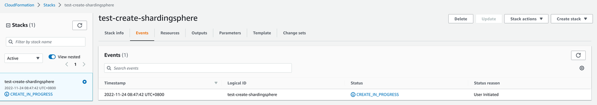

ShardingSphere Proxy cluster is an important part of the data infrastructure, and especially significant for its high availability feature. This section introduces how to use CloudFormation to build a ShardingSphere proxy cluster from scratch on Amazon AWS to achieve high availability.
We will create a ShardingSphere Proxy highly available cluster as shown in the following architecture diagram:

The AWS resources created are the following:
Each AZ has one ZooKeeper instance.
Each AZ has an Auto Scaling Group.
Each AZ has a Launch Template, which is used to start the SharedingSphere Proxy instance for the Auto Scaling Group.
An intranet Network LoadBalancer for applications.
To create a ShardingSphere Proxy highly available cluster, you need to prepare the following resources:

Click Choose File button to upload the prepared CloudFormation configuration.

Click Next after uploading.


After filling in the corresponding parameters, click Next.


Click Next after configuration.


Confirm and click Submit.



The value corresponding to ‘ssinernaldomain’ is the domain name we need.
The internal domain name created by default is proxy.shardingsphere.org, the port is 3307, and the username and password are root.
| Name | Description | Type | Default Value |
|---|---|---|---|
| HostedZoneId | Intranet HostedZone Id | String | |
| HostedZoneName | Intranet HostedZone Name | String | shardingsphere.org |
| ImageId | AMI Id, should be Amazon Linux 2 type or package management of yum Linux series | String | |
| KeyName | SSH key pair | String | |
| VpcId | VPC Id | String | |
| Subnets | The subnet list in the VPC must be in the same order as the alphabetical order of the AZ | CommaDelimitedList | |
| SecurityGroupIds | Security group list. Needs to release ports 2181, 2888, 3888 of ZooKeeper Server | CommaDelimitedList | |
| ShardingSphereInstanceType | EC2 instance type of ShardingSphere Proxy Server | String | |
| ShardingSphereJavaMemOpts | jvm memory parameters of ShardingSphere Proxy Server | String | -Xmx512m -Xms512m -Xmn128m |
| ShardingSpherePort | Port of ShardingSphere Proxy | String | 3307 |
| ShardingSphereVersion | Version of ShardingSphere Proxy | String | 5.2.1 |
| ZookeeperHeap | jvm Heap size of ZooKeeper, unit is m | String | 512 |
| ZookeeperInstanceType | EC2 instance type of ZooKeeper Server | String | t2.nano |
| ZookeeperVersion | Version number of Zookeeper Server | String | 3.7.1 |
| Name | Description | Export Name | Value |
|---|---|---|---|
| ZK1 | Zookeeper Server1 information | {‘Fn::Sub’: ‘${AWS::StackName}-Zookeeper-Server-1’} | {‘Fn::Join’: [':', [{‘Ref’: ‘ZK1’}, {‘Fn::GetAtt’: [‘ZK1’, ‘PrivateIp’]}, {‘Fn::GetAtt’: [‘ZK1’, ‘AvailabilityZone’]}]]} |
| ZK2 | Zookeeper Server2 information | {‘Fn::Sub’: ‘${AWS::StackName}-Zookeeper-Server-2’} | {‘Fn::Join’: [':', [{‘Ref’: ‘ZK2’}, {‘Fn::GetAtt’: [‘ZK2‘, ‘PrivateIp’]}, {‘Fn::GetAtt’: [‘ZK2’, ‘AvailabilityZone’]}]]} |
| ZK3 | Zookeeper Server3 information | {‘Fn::Sub’: ‘${AWS::StackName}-Zookeeper-Server-3’} | {‘Fn::Join’: [':', [{‘Ref’: ‘ZK2’}, {‘Fn::GetAtt’: [‘ZK2’, ‘PrivateIp’]}, {‘Fn::GetAtt’: [‘ZK2’, ‘AvailabilityZone’]}]]} |
| zoneZK1 | Zookeeper Server1 Internal domain name | {‘Fn::Sub’: ‘${AWS::StackName}-Zookeeper-Domain-1’} | {‘Ref’: ‘zoneZK1’} |
| zoneZK2 | Zookeeper Server2 Internal domain name | {‘Fn::Sub’: ‘${AWS::StackName}-Zookeeper-Domain-2’} | {‘Ref’: ‘zoneZK2’} |
| zoneZK3 | Zookeeper Server3 Internal domain name | {‘Fn::Sub’: ‘${AWS::StackName}-Zookeeper-Domain-3’} | {‘Ref’: ‘zoneZK3’} |
| ssinternaldomain | Internal domain name used externally by ShardingSphere Proxy | {‘Fn::Sub’: ‘${AWS::StackName}-ShardingSphere-Internal-Domain’} | {‘Ref’: ‘ssinternaldomain’} |
By default, ZooKeeper and SharedingSphere Proxy services created using our CloudFormation can be managed using Systemd.
systemctl start zookeeper
systemctl stop zookeeper
systemctl restart zookeeper
systemctl start shardingsphere
systemctl stop shardingsphere
systemctl restart shardingsphere
This CloudFormation involves the following resource lists:
| Resource Name | Type |
|---|---|
| ZK1 | AWS::EC2::Instance |
| ZK2 | AWS::EC2::Instance |
| ZK3 | AWS::EC2::Instance |
| zoneZK1 | AWS::Route53::RecordSet |
| zoneZK2 | AWS::Route53::RecordSet |
| zoneZK3 | AWS::Route53::RecordSet |
| networkiface0 | AWS::EC2::NetworkInterface |
| networkiface1 | AWS::EC2::NetworkInterface |
| networkiface2 | AWS::EC2::NetworkInterface |
| launchtemplate0 | AWS::EC2::LaunchTemplate |
| launchtemplate1 | AWS::EC2::LaunchTemplate |
| launchtemplate2 | AWS::EC2::LaunchTemplate |
| ssinternallb | AWS::ElasticLoadBalancingV2::LoadBalancer |
| sslbtg | AWS::ElasticLoadBalancingV2::TargetGroup |
| autoscaling0 | AWS::AutoScaling::AutoScalingGroup |
| autoscaling1 | AWS::AutoScaling::AutoScalingGroup |
| autoscaling2 | AWS::AutoScaling::AutoScalingGroup |
| sslblistener | AWS::ElasticLoadBalancingV2::Listener |
| ssinternaldomain | AWS::Route53::RecordSet |
We use cfndsl to generate CloudFormation configurations.
You need to follow the steps provided in cfndsl to install.
cfndsl -u 94.0.0
cf.rb, run the following command to generate a CloudFormation configuration. cfndsl cf.rb -o cf.json --pretty